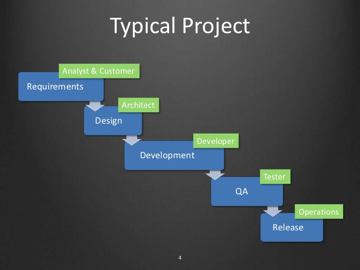

Agenda
- O que é?
- Por que?
- Objetivos
- Princípios
- Pré requisitos
- Deployment pipeline
- Exemplo
O que é?
-
“Um conjunto de prticas e principios com o objetivo de construir, testar e entregar software mais rápido e com mais frequencia.“
-
“Uma maneira de entregar software que reduz custos, tempo e os riscos ao entregar pequenas mudanças para o usuário.“
-
É estar pronto para entregar software a qualquer momento
Por que?

Por que?
“Entrega de valor e entrega continua“- Manifesto Agil
Objetivos
Reduzir o risco de uma entrega
Criar um processo bem definido de release
Tornar o processo de entrega menos doloroso e com menos surpresas
Princípios
Cada commit gera um release candidate
“The longer you delay, the worse(exponentially) the problem becomes“ [Neal Ford - Director at ThoughtWork]
-
Automatize tudo que pode ser automatizado
-
Testes automatizados são essenciais
-
Feedback rápido e continuo
-
Melhoria continua
-
Colaboração, todo mundo é responsável pela release
-
Progresso mensuravel
-
Quantos builds falharam?
-
Em qual etapa falhou?
-
Quanto tempo para colocar uma versão em produção?
-

Pré Requisitos
-
Integração continua
“Works on my machine“
-
Testes automatizados
-
Agile???
Deployment Pipeline
Processo automatizado do seu build, deploy, testes e release.
Pode se dizer que é a instanciação do continous delivery